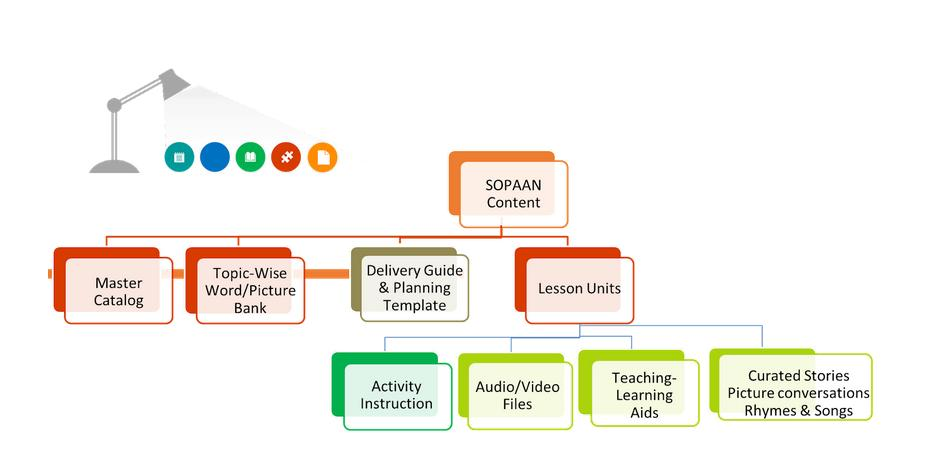
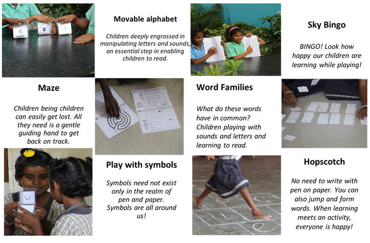

Overview of SOPAAN Content

Curated stories/games/activities
A carefully curated set of stories, games and activities that provide the required immersion, engagement, concept reinforcement and enrichment for children during the learning process.
Instructions to conduct the activities and printable learning materials for games and activities.
Picture and Word bank
A master set of pictures and words categorised across concepts. The word and picture bank also serve as teaching and learning aids.
Student Worksheets
Ready to use student worksheets to help teachers reinforce the concepts for children.
Delivery Guide & Planning template
Delivery guides and planning templates to help teachers plan and effectively use the teaching and learning aids provided in a multi-grade multi-level classroom.
Sample Activities in a SOPAAN Session

Are you passionate about Foundation Learning and inclined to volunteer in the development of content or impart training to teachers, or visit schools that are implementing the program to further guide the teachers? If so, can you spare a couple of hours a day or 8 to 10 hours a week?
Please contact us at:
sopaan.support@sssvv.org
+91 98407 77493